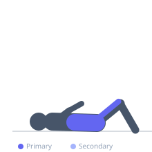

Exercise guide / Jackknife Sit-Up — Swiss Ball
Jackknife Sit-Up — Swiss Ball
The Swiss ball jackknife sit-up combines simultaneous hip flexion and spinal flexion by having the athlete curl both the lower body (rolling the ball forward) and the upper body upward to meet in the middle in a folding or jackknife motion. The unstable surface of the Swiss ball challenges core stability throughout the movement, while the simultaneous recruitment of the upper and lower rectus abdominis creates a unique peak-contraction stimulus. The movement requires significant hip flexor and abdominal coordination.
Primary muscles
rectus abdominis
iliacus
psoas major
Secondary muscles
internal oblique
rectus femoris
Stabilizers
transverse abdominis
erector spinae
Equipment
Swiss Ball (Stability Ball / Exercise Ball)


Starting position
- Lie back on the Swiss ball with the ball under the lower to mid-back, feet flat on the floor. Arms can be extended back overhead or crossed at the chest.
Setup
- Ensure the Swiss ball is adequately inflated and placed on a non-slip surface. Use a size appropriate to your height.
Steps
- Step 1: Begin draped over the ball, spine extended, arms overhead or at chest.
- Step 2: Simultaneously curl the upper body upward (spinal flexion) while drawing the knees toward the chest by rolling the feet back.
- Step 3: Both the upper and lower body converge at the top of the movement — the knees and chest meet over the top of the ball.
- Step 4: Extend back out in a controlled manner, letting both the upper and lower body lower simultaneously.
- Step 5: Return to full extension and repeat.
Coaching cues
- Bring the knees and chest to meet each other
- Control both directions equally
Breathing
- Exhale on the jackknife. Inhale on the controlled extension.
Range of motion
- Full extension draped over the ball to full jackknife with knees and chest meeting.
Tempo
- 2-1-2-0. Fully controlled — the ball challenges coordination.
Common mistakes
- Only performing the upper-body crunch without bringing the knees up
- Losing balance on the ball — start with feet slightly wider for stability
Safety
- Ensure the ball is on a non-slip surface and correctly sized
Training
- hypertrophy: 10–15 reps
- hypertrophy: 3–4 sets
- Rest: {'hypertrophy': 60}